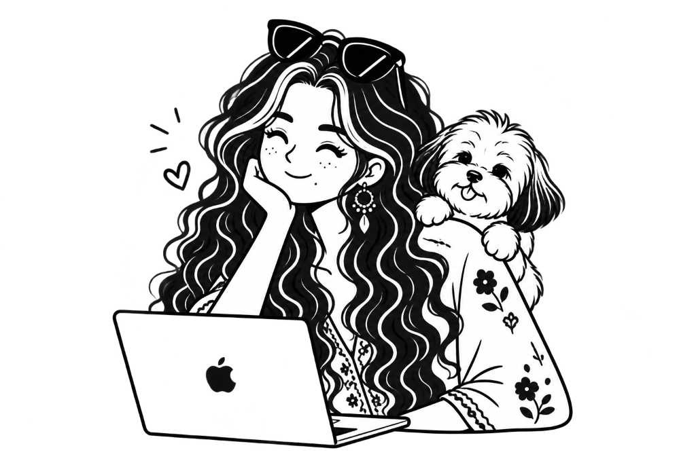

01
Research & Context
Uncovering user needs through interviews, observation, and market analysis to understand the real problem space.
Brisbane, Queensland, Australia
✿ Available for UX & Spatial RolesDesigning spaces and digital experiences that endure.
UI/UX Designer with a background in architecture, specialising in user research, interaction design, spatial UX, and accessible digital products.

02 | Selected Portfolio Work
03 | Design Methodology
Uncovering user needs through interviews, observation, and market analysis to understand the real problem space.
Translating research findings into clear information architecture, user journeys, and structural wireframes.
Crafting responsive UI layouts and interactive Figma prototypes, then validating them through usability testing.
Building accessible component libraries, ensuring WCAG compliance, and preparing clean handoff documentation.